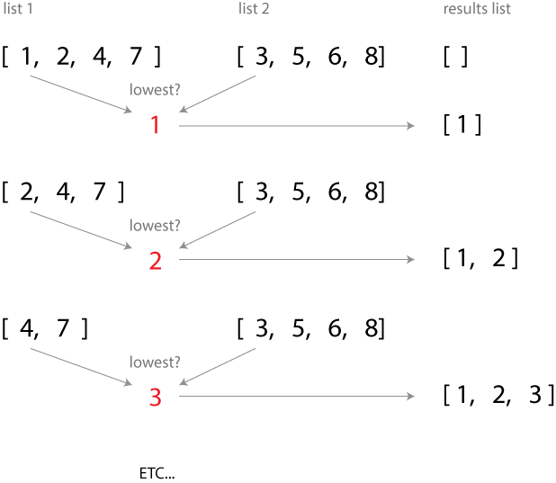
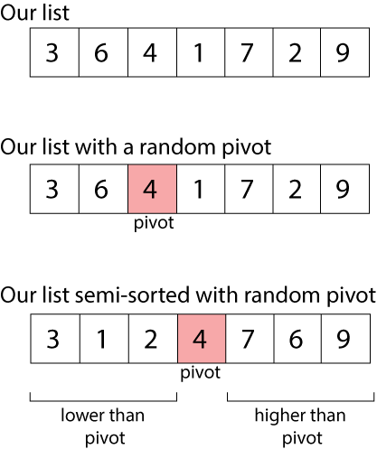
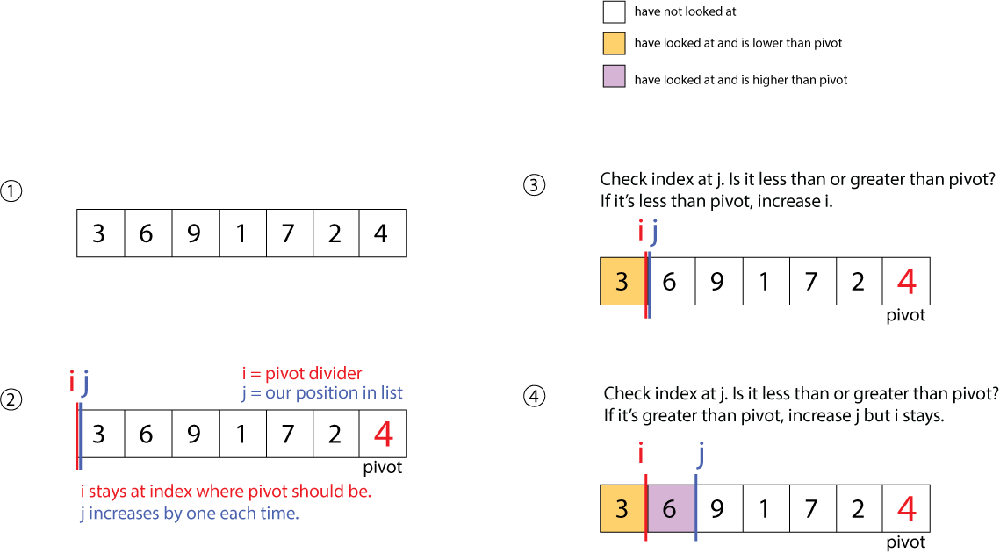
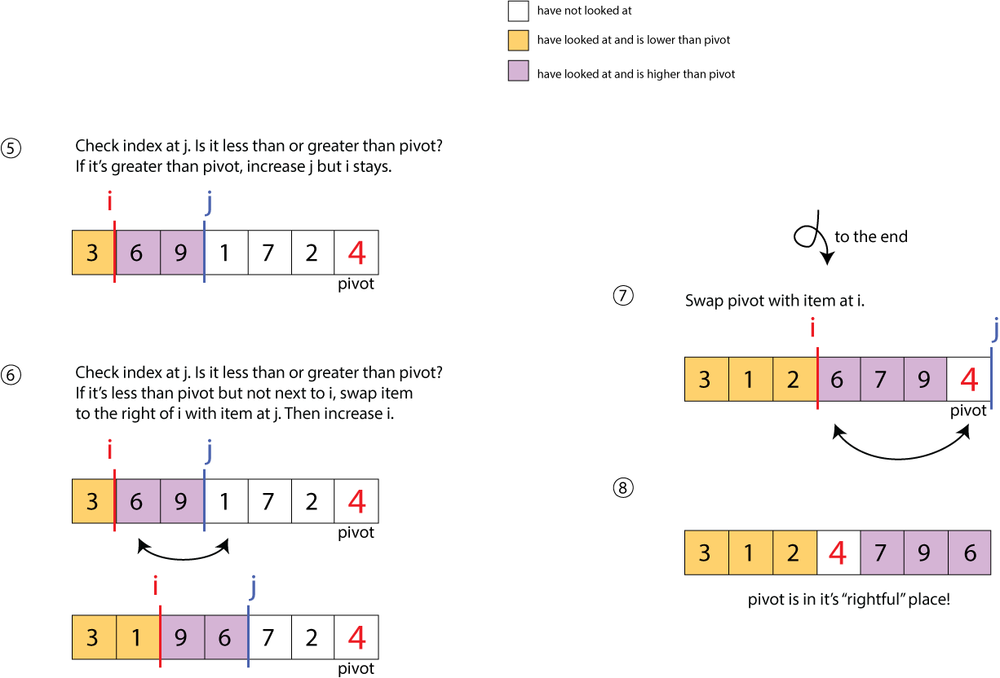

Sorting Algorithms
What is about to happen?
- Introduction
- Three types of sort:
- Bubble Sort
- Merge Sort
- Quick Sort(quickly)
- Other considerations
- Resources and exercises
Why are sorting algorithms a thing?
Because sometimes you need to sort stuff.
"Uhh, well, just take the big numbers and put them at the end until they're in order?
What if your list is a billion numbers long?
How long would that take?
Could you make it faster?
How would you write instructions for a computer?
Many sorting strategies:
- Insertion
- Bubble
- Selection
- Shell
- Merge
- Heap
- Quick
Why would you choose one over the other?
- Runtime
- Space requirements (how much more space does it need)
- Likely structure of your data:
- Random?
- Almost reversed?
- Almost sorted?
- Likely Duplicates?
Any ideas for a sort strategy?
A simple sort
For a random list
[6, 5, 3, 1, 8, 7, 2, 4]How might we go about sorting this programmatically?
A simple sort
[6, 5, 3, 1, 8, 7, 2, 4]Okay, start at the beginning....that's a 6
Look at the next number... that's a 5
Oh! 5 is less than 6, so switch them!
[5, 6, 3, 1, 8, 7, 2, 4]Now compare the next two, 6 to three, switch them!
etc...
A simple sort

Why is this called bubble sort?
Because after first pass through the list, the highest number floats to the top.
A Simple Sort
Let's code it!
def bubble_sort(l):
for i in range(len(l) - 1):
num1, num2 = l[i], l[i+1]
if num1 > num2:
l[i], l[i+1] = num2, num1
return l
What's wrong with this?
A Simple Sort
Let's code it better!
def bubble_sort(l):
is_sorted = False
while is_sorted == False:
is_sorted = True
for i in range(len(l) - 1): # go through each except last
num1, num2 = l[i], l[i+1]
if num1 > num2: # if you have to switch,
is_sorted = False # it's not sorted
l[i], l[i+1] = num2, num1 # switch the numbers
l = bubble_sort([6, 5, 3, 1, 8, 7, 2, 4]) # => 42 steps!A Simple Sort
Runtime?
Two nested loops, so ....
O(n2)
Optimize: How could it run in 21 steps (Twice as fast!)?
Runtime will be O(n2/2), so unfortunately still O(n2)
Bubble Sort
We have just implemented bubble sort!

Stats?
Worst case: O(n2)
Average case: O(n2)
: (
We can do better!
ENTER MERGE SORT
Merge Sort
Merge sort is awesome because it runs in O(n log(n)) time

Merge Sort
BUT FIRST: MERGE
Let's say we have
two already sorted arrays
and we want to make
one sorted array.
lst1 = [1, 2, 4, 7]
lst2 = [3, 5, 6, 8]
How can we merge them?
#output => [1, 2, 3, 4, 5, 6, 7, 8]Merge Sort
Merge: Strategy
- Start with two sorted lists
- Initialize new, empty list for results
- Compare first element of each sorted list
- Remove whichever element is lower and add it to the results list.
- Continue comparing the first elements of each list until one of them has no more items.
- Append the remaining items from the other list to results list
Merge Sort
MERGE
def make_one_sorted_list(lst1, lst2):
result_list = []
while len(lst1) > 0 and len(lst2) > 0: #if items left in both lists
#compare first items of each list
if lst1[0] < lst2[0]:
result_list.append(lst1.pop(0)) #append and rm first item of lst1
else:
result_list.append(lst2.pop(0)) #append and rm first item of lst2
result_list.extend(lst1)
result_list.extend(lst2)
return result_list
#input lists must be already sorted themselves
print make_one_sorted_list([1, 2, 4, 7], [3, 5, 6, 8])
#output => [1, 2, 3, 4, 5, 6, 7, 8]
Merge Sort
BUT FIRST: MERGE
Merge Sort
BUT FIRST: MERGE
This merge solution is generalizeable for any two
pre-sorted
lists!
AWESOME!!
But how can we guarantee a pre-sorted list??
Merge Sort
Base Case
What kind of list can we KNOW is already pre-sorted?
A list with one item is always sorted.
Merge Sort
How to get down to where every list is one item long?
RECURSION
RECURSION
recursion
recursion
recursion
recursion
Merge Sort
Make everything a list of one
def make_everything_a_list_of_one(lst):
if len(lst) < 2: #if length of lst is 1, return lst
print lst,
return lst
mid = int(len(lst)/2) #index at half the list
make_everything_a_list_of_one(lst[:mid]) #divide list in half
make_everything_a_list_of_one(lst[mid:]) #assign other half
lst2 = [3, 5, 6, 8]
make_everything_a_list_of_one(lst2) #outputs => [3] [5] [6] [8]
Merge Sort

Merge Sort
Your Mission:
Combine these to make merge sort
Or look at the code at the end...
Merge Sort
Stats
Runtime?
O(n log(n))
Runspace?
O(n)
This means that there's n (the length of the list) extra space needed to complete the algorithm. This takes the form of the results list.
Others with
O(n log(n))?
- Quick Sort
PLUS, operates in place
Quick Sort (quickly)
Operates on the idea of a partition
That is, there is a 'pivot' and we can move all the numbers lower than the pivot number to the beginning of the list and move all the numbers bigger than the pivot to the right of the pivot number.
Quick Sort (quickly)
Now, our pivot is in it's "rightful" place.
Quick Sort (quickly)
Instead of continually swapping pivot, use pointers to look through entire list, and swap pivot once!
Quick Sort (quickly)
Further resources:
- Quicksort intro: https://www.youtube.com/watch?v=aQiWF4E8flQ (6 min)
- Tim Roughgarden Quicksort: https://class.coursera.org/algo-006/lecture (Quicksort-Algorithm, first two lectures)
- "An Intuitive Explanation of Quicksort" http://www.quora.com/What-is-an-intuitive-explanation-of-QuickSort

Want to practice?
- Write bubble sort
- BONUS: Write bubble sort in O(n2/2) time
- Write merge sort
- BONUS: Don't change length of sublists (don't use pop)
- Write quick sort
Resources
- Animated Sort Algorithms (compare with gifs!)
- Hungarian Dance sorting:
Merge Sort
def merge_sort(lst):
# here we are breaking everything down into a list of one
if len(lst) < 2: #if length of lst is 1, return lst
return lst
mid = int(len(lst)/2) #index at half the list
lst1 = merge_sort(lst[:mid]) #divide list in half
lst2 = merge_sort(lst[mid:]) #assign other half
# here we are comparing the first items of each pair of lists and interleaving a result list
result_list = []
while len(lst1) > 0 and len(lst2) > 0: #if items left in both lists
#compare first items of each list
if lst1[0] < lst2[0]:
result_list.append(lst1.pop(0)) #append and rm first item of lst1
else:
result_list.append(lst2.pop(0)) #append and rm first item of lst2
result_list.extend(lst1)
result_list.extend(lst2)
return result_list
print merge_sort([54, 2, 3, 9, 23, 8, 0, 4, 6])